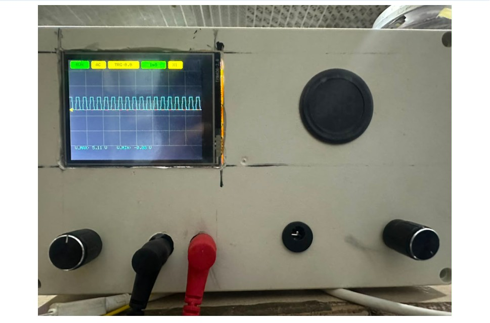
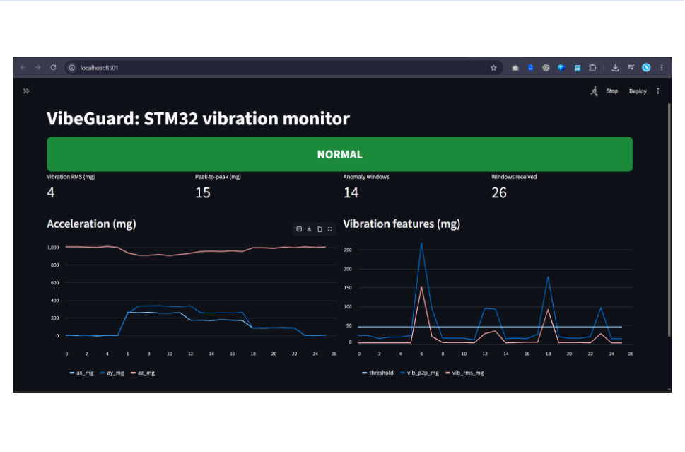
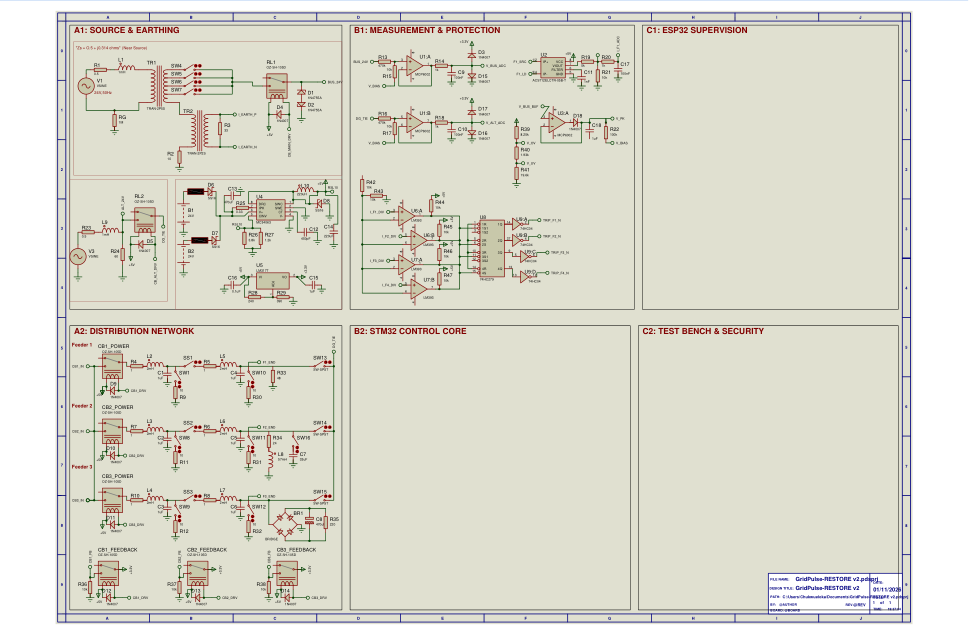
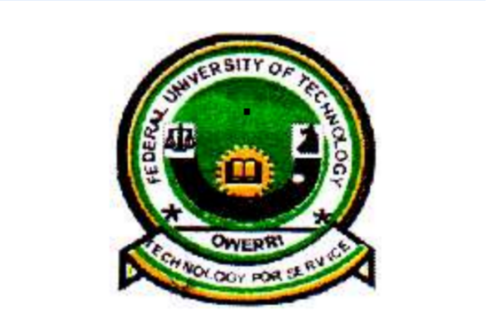
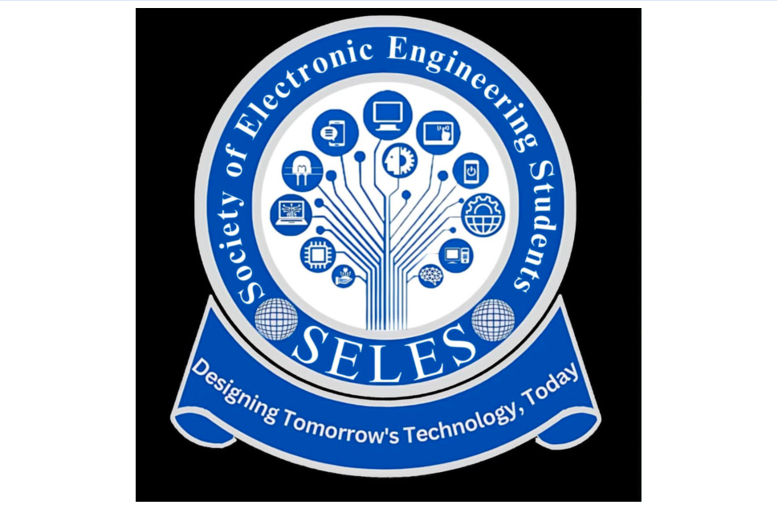
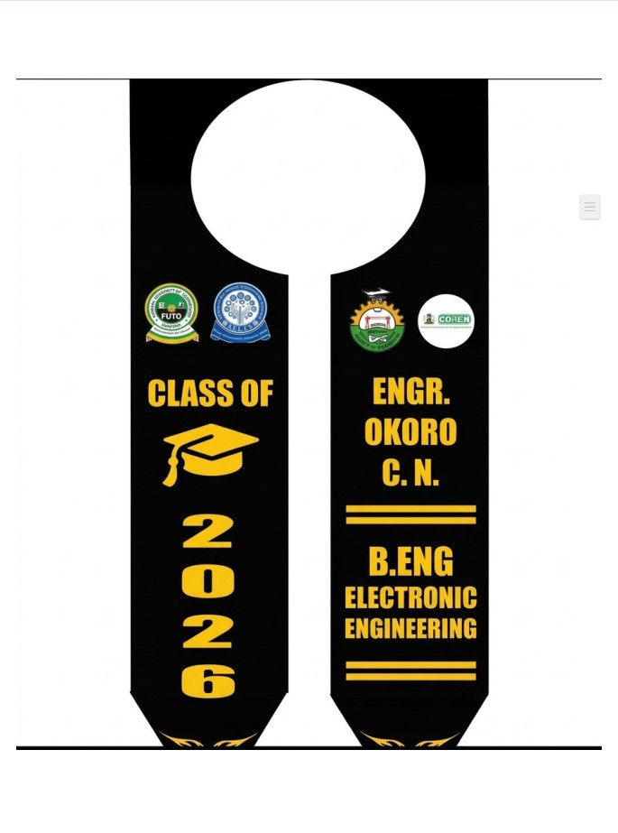

PowerScope
Build an instrument that can source a signal, acquire it and expose the response.
Explore the instrument ↗ELECTRONIC ENGINEERING · NIGERIA
I work at the intersection of embedded systems, electronic instrumentation, edge diagnostics and cyber-physical power systems.
My work follows a connected question: how can low-cost embedded systems sense physical behaviour, interpret it reliably and support decisions that can be explained and verified?
 OKORO CHUKWUELOKA · ELECTRONIC ENGINEERING
OKORO CHUKWUELOKA · ELECTRONIC ENGINEERING
01 / INSTRUMENTATION
03 / EDGE DIAGNOSTICS
02 / CYBER-PHYSICAL SYSTEMS01 / PROFILE
From the sensor pin to the operator dashboard.
A useful system does more than collect data. It gives that data a trustworthy path to a decision.
I am a final-year B.Eng. Electronic Engineering student at the Federal University of Technology, Owerri (FUTO), with expected completion on 5 December 2026. My current CGPA is 3.0/4.0. I build and document embedded and electronic systems involving microcontroller firmware, measurement front ends, PCB design, signal processing, telemetry and monitoring interfaces.
My strongest interest is resource-aware edge diagnostics for electrical and industrial assets: how sensing, signal conditioning, compact computation and dependable communication can improve monitoring while respecting constraints in timing, memory, energy and reliability.
PowerScope, VibeGuard and GridPulse-RESTORE form the centre of that trajectory. ESP32-C3 and STM32 board-development work extend the hardware foundation, while industrial attachment experience gives the research questions practical context.
Portraits and profile imagery from the supplied personal archive, retained as distinct visual records rather than substituted with stock imagery.

Federal University of Technology, Owerri
Society of Electronic Engineering Students (SELES)Academic and professional context
02 / RESEARCH SPINE
An engineering trajectory that moves from trustworthy acquisition to responsible action.
Build an instrument that can source a signal, acquire it and expose the response.
Explore the instrument ↗Turn vibration samples into statistical features, live telemetry and visible diagnostic states.
Explore the diagnostic system ↗Keep protection local, make restoration supervised and preserve safety interlocks.
Explore the grid testbed ↗How can low-cost embedded platforms support reliable fault diagnosis and condition monitoring of electrical and industrial assets under constraints in compute, timing, memory, energy and communications?
03 / SELECTED ENGINEERING WORK
Five featured projects, with the technical record, image evidence, role and validation boundaries kept together.
PROJECT 01 / INSTRUMENTATION
Portable dual-channel oscilloscope & programmable DC power supply
One instrument, two laboratory needs: supply a circuit, then observe how it responds.
PowerScope is the undergraduate thesis project: a portable electronic-laboratory instrument combining an adjustable DC power supply with a two-channel digital storage oscilloscope. The objective is to bring source control, waveform acquisition, display and remote waveform viewing into one coordinated system.
My role: Lead Hardware & Firmware Designer within a four-person final-year project team. This is collaborative work, and the portfolio identifies it as such.
These are the actual development and test photographs supplied with the project record. Select any image to inspect it at full size.
TEAM & SUPERVISION
These photographs document the project team and the academic supervision context. The final-year instrument was completed as a group project.
The documented architecture uses a dual-channel AD9251-20 14-bit converter, with simultaneous sampling at 10 MS/s per channel. The analogue path includes input protection, selectable attenuation and THS4551 fully differential drivers before conversion. FPGA logic provides predictable capture and channel framing.
The supply is specified around a 1–15 V output, up to 2 A, using an LM5176 buck-boost controller. Battery-management / charger interfacing is documented around the LTC4015.
The ESP32-S3 supervisory controller handles display telemetry, parameter adjustment and wireless data streaming. The wireless view complements the measurement system; it does not replace the analogue bandwidth or sampling path.
The CV records an exploratory Edge Impulse fault-classification pipeline using FFT and DWT feature representations. No industrially validated classifier performance is claimed here.
Validation boundary: calibration accuracy, effective number of bits, bandwidth, noise floor and trained-model performance should only be quoted when the associated measurement protocol and results are published.
PROJECT 02 / CYBER-PHYSICAL POWER SYSTEMS
Fault-aware feeder isolation & human-approved service restoration
A grid controller should know when to trip—and when it must wait for a human.
GridPulse-RESTORE is a scaled low-voltage distribution-network testbed. It explores protection, feeder isolation, alternate-source capacity assessment and a supervised restoration sequence. Its research motivation is grounded in distribution-network exposure during EEDC industrial training and the accompanying human-on-the-loop preprint.
Controller split: STM32F103C8T6 retains local protection authority; the ESP32 handles telemetry and supervisory requests. The gateway cannot override local trip logic.
The three visuals show the electrical plant drawing, the source schematic supplied in the indexed bundle and the structured implementation blueprint.
Hardware comparator / latch paths are intended to trip independently of network messages.
Break-before-make logic prevents source paralleling; position feedback must be checked.
ESP32 forwards a validated operator request; the STM32 re-checks safety preconditions.
The corrected controller is STM32F103C8T6, not STM32F407. The control-core plan specifies three 74HC595 outputs and three 74HC165 inputs on SPI2 for 24 outputs and 24 inputs.
TR1 is the corrected 2P5S transformer designation. Four tap-selection switches were retained because the available transformer terminals were already allocated; a fifth switch was not reintroduced.
TR2 is the 100:1 current transformer placed in the neutral-earthing path for isolated earth-current measurement through the burden / sensing chain. It is not a feeder load-current CT.
The surge clamp is a back-to-back pair of 43 V 1N4755A zeners. The F3 bridge / capacitor load uses the corrected 220 Ω resistor.
Safety: this is an isolated, current-limited low-voltage demonstrator only. It must never be connected to utility mains.
PROJECT 03 / EDGE DIAGNOSTICS
STM32 vibration monitoring, statistical features & live dashboard
A vibration trace becomes useful when the embedded system can explain why it looks abnormal.
VibeGuard is a condition-monitoring prototype built around an STM32F103 target and an ADXL345 accelerometer. It reads sensor data over I²C, computes RMS and peak-to-peak features on the microcontroller and streams telemetry over UART to a Python dashboard for live visualisation and status alerts.
Research connection: it extends the signal-acquisition and diagnostic interests developed through PowerScope and the UAV motor-monitoring work.
These are the labelled MCU, firmware, schematic, block-diagram, terminal and dashboard captures. The three dashboard states are shown together so a reviewer can compare normal, warning and critical states.
VIBEGUARD / DEMONSTRATION
The dedicated demonstration area is ready for the recorded walkthrough. The actual video file has not yet been supplied in this portfolio bundle, so no placeholder clip or unrelated video is shown.
VIDEO SLOT READY · AWAITING YOUR RECORDINGSDO is separated from SDA and tied to GND for address 0x53; SDA connects to STM32 PB9 and SCL to PB8. CS is held high for I²C mode, subject to the actual symbol / module datasheet.
4.7 kΩ pull-ups are specified on SDA and SCL to 3.3 V. If a 5 V LCD backpack pulls the bus to 5 V, use a compatible arrangement or bidirectional level shifter to protect the STM32.
NRST uses a 10 kΩ pull-up to 3.3 V and a reset pushbutton to GND; BOOT0 uses a 10 kΩ pull-down for normal Flash boot. Package pin numbers and debug timing must be verified against the exact model.
VIB_OUT connects to ADC-capable PA0 and must remain in the ADC input range (nominally 0–3.3 V). USART1 TX PA9 goes to terminal RXD; PA10 RX goes to terminal TXD; grounds are common.
The Proteus schematic illustration is not a substitute for a verified project file. Sensor-model behaviour, compiled firmware, sampling assumptions and timing should be checked in the chosen toolchain.
PROJECT 04 / EMBEDDED HARDWARE
PCB iteration, component planning & firmware test development
A board is a record of engineering choices—not just a rendered shape.
This project centres on an ESP32-C3 environmental-logging platform. The available repository evidence is strongest in the hardware-development workflow: KiCad project files, BOM spreadsheets, test sketches and a documented prototype-2 improvement image.
Exact sensor models, calibration, sampling interval and logging destination are not inferred where the public repository material does not yet specify them.
PROJECT 05 / PCB DESIGN
KiCad schematic capture and board design study
Understanding the controller starts before firmware: with the board that exposes it.
This board-design exercise explores STM32F103 pin access, schematic-to-PCB translation, component placement and preparation of design / manufacturing files. It is presented as a PCB design study, not a production-qualified or electrically validated board.
04 / INDUSTRIAL & COMMUNITY EXPERIENCE
Field exposure, technical learning, teaching and service inform how I define engineering problems.
Enugu Electricity Distribution Company · Abakpa District, Enugu
The industrial attachment rotated across seven engineering departments and exposed me to distribution operations, field safety, maintenance, asset records and network expansion workflows.
Five labelled photographs from the supplied EEDC / distribution field archive.
Five-month part-time attachment across Enugu and Abuja. Exposure included RF networks, VHF / UHF propagation, transmitter maintenance, repeaters, trunked-radio control and analogue / digital communications.
SIWES internship in May 2024, developing MATLAB scripts for numerical computing, data preprocessing, visualisation and mathematical modelling in a six-person team.
Peer learning, student activities and academic seminars
Coordinated peer tutorials and student learning activities for more than 200 students, and organised student activities and workshops. The following images are from the labelled academic-seminar archive.
The supplied sash artwork identifies the 2026 graduating class and the B.Eng. Electronic Engineering programme. The CV records expected completion on 5 December 2026.

05 / AWARDS & RECOGNITION
The awards are separated by programme and context, with the original photographs kept beside their descriptions.
Web Application Development
Recognised as a Cohort 2 winner in the Web Application Development track. The award included a laptop prize. The photograph shown here is the labelled prize-day image supplied for the portfolio.
Service recognition presented at the final-year send-forth ceremony. This record is distinct from the Skill-Up Imo award and documents campus leadership and service.
Departmental Letter of Academic / Character Commendation, Electronic Engineering Department, FUTO — recorded in the current CV.
See academic and service experience ↗06 / EDUCATION & CREDENTIALS
Course certificates, platform records and course-progress evidence included in the supplied labelled archive.
Expected completion: 5 December 2026 · CGPA: 3.0 / 4.0 · English-medium instruction
Each image opens at full size. The gallery includes the course evidence supplied in the labelled PDF index; completion dates and validation details are described only where visible in the supporting records.
Renesas / Altium Academic Programmes · STMicroelectronics Ecosystem Academy · Texas Instruments Precision Labs. These are presented as current training programmes, not completed certifications.
07 / PUBLICATIONS & RESEARCH OUTPUT
Two October 2026 preprints and one ongoing undergraduate research assistant role give the project work a research context.
Engineering Archive (engRxiv) · DOI: 10.31224/8498 ↗
Framework and validation protocol; not yet validated on a utility feeder.Engineering Archive (engRxiv) · DOI: 10.31224/8499 ↗
Preliminary design paper for the undergraduate team instrument project.Department of Electronic Engineering, FUTO · Working paper in preparation · With Prof. G. Chukwudebe, Prof. U. Ezeh and Dr. C. Anyalewechi.
Contributing to edge sensor acquisition, hardware-level anti-tamper detection and the System Architecture, Hardware Security and Experimental Validation sections of the manuscript.
HUMAN-ON-THE-LOOP · DISTRIBUTION-FEEDER RESTORATION
I am currently applying for research-grant support from ACE-FUELS at the Federal University of Technology Owerri to further develop my first-author Human-on-the-Loop (HOTL) cyber-physical framework for fault-aware service restoration in Nigerian distribution feeders.
The proposed continuation builds on the published framework and the GridPulse-RESTORE testbed: strengthening the restoration model, its local protection and operator-approval logic, and the staged simulation/validation protocol. The research remains at the framework and testbed-development stage; utility-feeder validation has not yet been completed.
Research fit: ACE-FUELS identifies Clean and Future Energy among its core areas. I frame dependable distribution and fault-aware restoration as enabling infrastructure for wider clean-energy deployment. This is a proposed interdisciplinary connection, not a claim of an existing ACE-FUELS partnership or endorsement.
08 / TECHNICAL TOOLKIT
A practical toolkit that connects embedded firmware, electronics, signal processing and system modelling.
ARM Cortex-M / STM32, ESP32 / ESP32-S3, ATmega328P, PIC; C and C++; peripheral-level development; UART, SPI, I²C, ADC and DMA; RTOS concepts.
Altium Designer, KiCad, Proteus VSM and LTspice; schematic capture, PCB layout, component planning, analogue front ends, relay and driver circuits.
Data acquisition, signal conditioning, RMS / peak-to-peak analysis, FFT, DWT, filtering, power conversion, protection logic and control systems.
Python, MATLAB / Simulink, PlatformIO, Git, LaTeX and Edge Impulse; baseline anomaly detection and constrained edge-classification concepts.
09 / APPLICATION DOCUMENTS
Concise application documents, with this site serving as the extended evidence record.
10 / CONTACT
I welcome conversations about MSc supervision, embedded systems, electronic instrumentation, edge diagnostics, cyber-physical power systems and technically grounded research collaboration.
Scan the personal QR code to add me. Display name: okoro Chukwueloka.
For prospective supervisors, collaborators and academic contacts. OPEN / SCAN QR ↗
OPEN / SCAN QR ↗